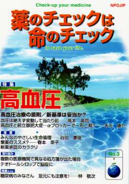

No.3 特集 高血圧 2003年2月 第2刷発行 （絶版）
1998年の国民栄養調査の結果（文献１）によれば、成人人口の15（女）〜20％（男）が上が160 以上か下が95以上の高血圧、さらに20（女）〜25％（男）が上が140 〜160 まで、あるいは下が90〜95までの境界域です。高血圧者は1800万人、境界域2500万人の合計4300万人が高血圧もしくはその傾向のある人です。放置すれば脳卒中や心臓病、腎臓病などにつながるだけに、血圧を適切にコントロールすることはとても大切なことです。
WHO と国際高血圧学会が血圧を下げる目標値を1999年に 130/85 未満としました。日本でも、この基準を採用した「高血圧治療ガイドライン2000年版」が2000年９月に発表されました。生活習慣をしっかり見直してもなお血圧が160/95mmHg以上（注１：以後mmHgは省略）ある場合に血圧降下剤（注２）を使用するというのがこれまでの高血圧治療の基準でしたが、今回の基準改訂では、これまでの境界域としていた人よりももっと低い値を目標とすることになりました。もしもこの基準に皆が従うことになれば、基準を変更したことで日本では新たに3000万人以上が血圧降下剤を必要とするようになるのです。
本当にこの基準に従って血圧を下げたほうがよいのでしょうか。この基準が間違っていたら、これは大変なことです。いったいどういうデータを根拠にして変更されたのか、変更することでどのような影響が現れるのか、詳しく検証しましょう。
その前に、血圧が高くなる原因は何か？生活習慣やストレスがどうして血圧を高くするのか？悪い生活習慣を改めるのがなぜ重要なのかを解説します。血圧を測る際の注意、特に深呼吸することで血圧が下がることや、病院で測る場合に比べて家庭で測るとどれくらい低い値になるのかについても解説しています。これを読めば、血圧の薬を飲んでいる人でも、生活習慣を改めれば薬が必要なくなることもあるということが分かるはずです。次に、血圧降下剤にはどのような種類があり、どのような作用で血圧を下げるのか、そして、副作用や害がどのようなものか、長期に使用した場合にどのように体に影響してくるのか、についても解説します。今回は、グループとしての血圧降下剤の特徴を解説しました。個々の薬剤の評価や説明書は次回に掲載します。
注１：mmHgは血圧の単位。圧力を水銀柱（Hg）の高さに相当するmmで表したもの。収縮期 最高）血圧は単に上（の血圧）、拡張期（最低）血圧は単に下（の血圧）と略。
注２：「血圧の薬」などと一般には呼ばれている血圧を下げる薬剤。降圧剤ともいう。
誠に申し訳ございませんが絶版となっております。25号、38号、39号も高血圧を特集しております。 目次などでご確認いただき、そちらでのお申込をお勧めします。
もくじ
■海外からのメッセージ
メアリー・ヘミング氏（治療ガイドライン委員会事務局長、オーストラリア）
特集
■高血圧治療の原則
■血圧は絶えず変動して当たり前
■高血圧治療／新基準は妥当か？
■血圧降下剤（降圧剤）の種類と効き方
■どの降圧剤を選ぶ？
■高血圧と前立腺肥大症：αブロッカーで一石二鳥？
■薬の説明書（NPOJIPの判定付き）
・チアジド系降圧利尿剤
特集 その２
■糖尿病のみなさん、足元にも注意を！
■コレステロール（脂質）低下剤の評価結果
■読者の声
・「主治医も納得」
・「メバロチンを止めました」
・「薬剤多剤処方について」 など
連載
■リレーエッセイ 棄薬のススメ？
■新薬承認のカラクリ
市販後の臨床試験（カルシウム拮抗剤）
番外編（WHOの欠陥指針の背後関係は？）
■みんなのやさしい生命倫理 ３
プラセボの生命倫理（２） 臨床試験とプラセボ
■行ってきました EPO訴訟シンポジウム参加記
■Coffeeブレイク NPOJIPってなあに？（３）
とりくみ
■医師（医療機関）とのつき合い方−NPOJIPへの相談事例から
１ 複数の医療機関で異なる処方箋が出た場合
院外薬局としてどう対処するか
２ テオドールシロップで脳症に
提言
■NPOJIPの提言
薬害エイズ「安部被告無罪判決」を批判する
■質問箱 ポンタールは危険では？
■NPOJIP書籍紹介
■NPOJIP出版書籍申込み用紙
■読者の意見／感想用紙
■編集後記
病院でよく聞く言葉
（特集にちなんだ言葉を簡潔に解説）忙しい人はまずここから
○血圧 −心臓に近い場所ほど高い
○高血圧症 −一度の測定だけで判断しない
○降圧剤 −合併症を防ぎ寿命を延ばす
○白衣高血圧症 −診療室で測ると高くなる？
○低血圧 −重大な病気の心配は少ない
○脳卒中 − 依然高い死亡率・入院率
○脳卒中の診断 − CTでくっきり異常を映す
（日本経済新聞に浜六郎が掲載していたものを改変。加筆、新しく追加したものを含む）
特集その２より
糖尿病のみなさん 足にも注目を！
林 敬次 （高槻赤十字病院リハビリテーション科）
本誌第1号の糖尿病特集を読みましたが、足の問題（つまり靴）も重要なことだと考えますので、投稿します。
また、糖尿病の人に限らず、外反母趾の人や高齢者、一般的な既製靴は履きにくいという人も、よりよい靴について考える参考にしてください。
まず、足を見てください。
お風呂ででも、一度自分の足をじっくり観察してください。皮膚の状態はどうでしょうか。皮膚が硬くなっている「魚の目」、中心がへこんだり黒くなって、その周りが硬く厚い「胼胝（タコという漢字です！）」、皮膚がふくれて中に液体がたまる水胞、すり傷、赤い腫れなどがありませんか。深くまで皮膚がなくなっていれば最悪の「潰瘍（かいよう）」ということになります。（中略）
糖尿病になった人の15%に足の潰瘍―下肢切断せざるを得ない人も多い
イギリスの調査では糖尿病患者の約15%が、いつごろとは決まっていませんが、やがては足の潰瘍になっています。神経障害だけでなく血管障害によって、傷が治りにくいためです。この潰瘍の怖いところはなかなか治らないばかりか、そこから細菌が深部に入り込み、やがては下肢の切断をせざるを得ないことです。
（以下、引用省略）
詳しくは本誌で。
誠に申し訳ございませんが絶版となっております。25号、38号、39号も高血圧を特集しております。 目次などでご確認いただき、そちらでのお申込をお勧めします。